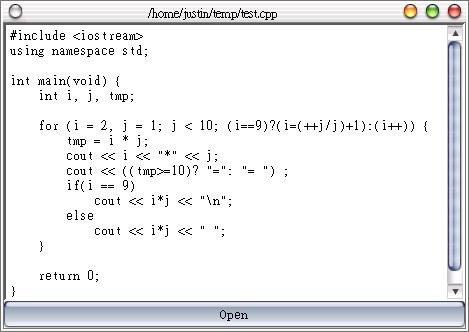

這
個程式基本上只是綜合了之前所介紹過的幾個元件，像是QVBox、QPushButton、QFileDialog等等，在元件的使用上並沒有什麼，我只
是想用它來作接下來的主題的開場，在Qt中其實並不只有圖形化的視窗元件好用，一些I/O、繪圖、網路等等好用的API在Qt也有提供，在這個例子中將會
使用到的是QFile與QTextStream，程式中簡單的使用這兩個類別，就可以很輕易的達到開啟檔案的動作。
首先編輯simreader.h：
#ifndef SIMREAD_H
#define SIMREAD_H
#include <qvbox.h>
class QTextEdit;
class QPushButton;
class SimReader : public QVBox {
Q_OBJECT
public:
SimReader(QWidget *parent = 0, const char *name = 0);
protected:
QTextEdit *output;
QPushButton *openButton;
protected slots:
void readTextFile();
};
#endif
再來編輯simreader.cpp：
#include "simreader.h"
#include <qfiledialog.h>
#include <qtextedit.h>
#include <qfile.h>
#include <qtextstream.h>
#include <qpushbutton.h>
SimReader::SimReader(QWidget *parent, const char *name)
:QVBox(parent, name) {
output = new QTextEdit(this);
openButton = new QPushButton("Open", this);
connect(openButton, SIGNAL(clicked()),
this, SLOT(readTextFile()));
resize(320, 240);
}
void SimReader::readTextFile() {
QString s = QFileDialog::getOpenFileName(
"/home", "Text files (*.txt);;Any files(*.*)",
0, "open file dialog Choose a file" );
QFile file(s); // Read the text from a file
if (file.open(IO_ReadOnly)) {
setCaption(s);
QTextStream stream(&file);
output->setText(stream.read());
}
}
最後是主函式main.cpp：
#include "simreader.h"
#include <qapplication.h>
int main(int argc, char **argv) {
QApplication app(argc, argv);
SimReader reader;
app.setMainWidget(&reader);
reader.show();
return app.exec();
}
這個程式的元件配置相信對您現在來說應該不難，主要新看到的兩個類別就是QFile與QTextStream類別，目前先不打算解釋這兩個類別，如果您C
++學的不得，其實單看這兩個類別的名稱，就可以知道它是在作什麼，這部份我們之後會有專門主題來介紹它們，您可以先自行查閱Qt的線上說明文件，有關於
這兩個類別的說明。
QTextEdit類別可以用來編輯單一頁的文字，基上上不限於純文字的編輯，還可以編輯字型、顏色等等RichText；setText()指定QTextEdit的顯示文字內容，目前我們先介紹到這邊，更多的方法與編輯樣式設定，以後有機會再來探討。
以下是這個程式開啟一個C++原始檔的畫面：

|
|